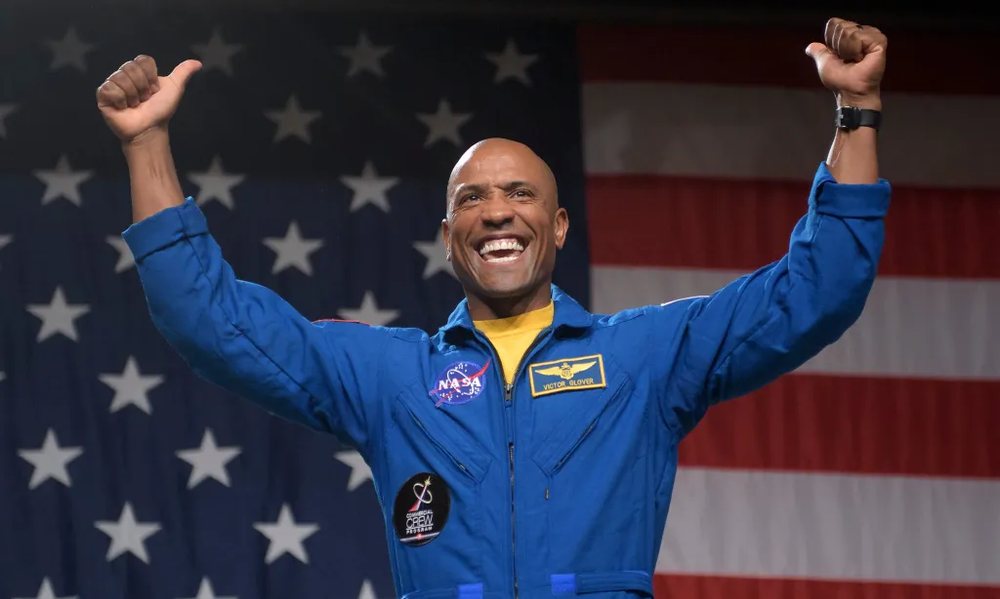
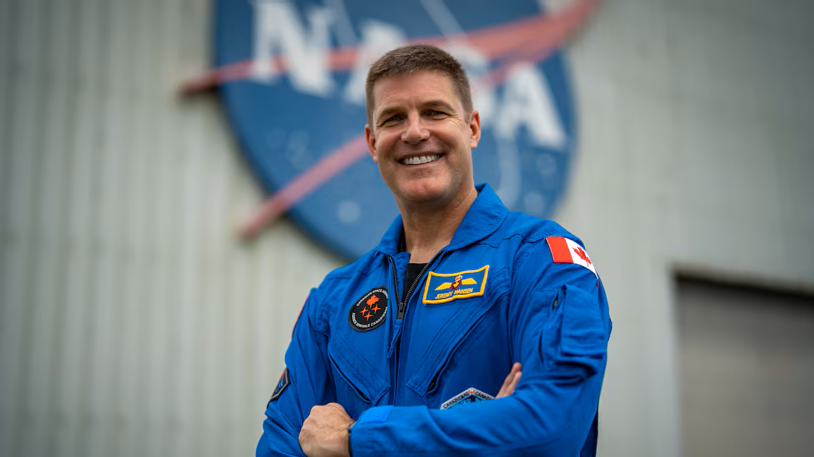

Artemis Missions
The Artemis missions are a series of complex lunar expeditions flour the purpose of returning humans to the moon, expand scientific exploration, and prepare for crewed missions to mars. the artemis missions began with an uncrewed test-flight to a lunar flyby then afterwards what potentially could be the next landing on the moon after 50 years.
Artemis I
Artemis I was an uncrewed test-flight that launched the sls rocket carrying the orion spacecraft for the first time. Orion spent 25 days travelling, lunar orbiting, and then back to earth, this paved the way for the future mission Artemis II. This mission successfully demonstrated orion's heat shield, navigation, and deep-space performance.
Artemis I Stats
- Mission Duration: 25.5 Days
- Launch Date: 16th November 2022
- Launch Site: Kennedy Space Center
- Distance from Earth: 432, 210KM
- SLS Block 1
- Launch Vehicle: SLS Block 1
- Orbit Type: Distant Retrograde
- Crew: Unmanned
Artemis II
Artemis II successfully completed nasa's first crewed lunar flyby of the artemis program. this mission carried for astronauts on a 10-day journey from the moon and back. This mission successfully validate orion's life support, navigation, and deep-space system with crew. This means that nasa is ready to move forward to the next step of the artemis program
Artemis II Stats
- Mission Duration: 10 Days
- Launch Date: 1st April 2026
- Launch Site: Kennedy Space Center
- Distance from Earth: 406, 773KM
- SLS Block 1
- Launch Vehicle: SLS Block 1
- Orbit Type: Free-return Trajectory
- Crew: Four
Artemis II - Meet the Crew

Victor Glover
Pilot
Captain Victor Glover jr. piloted the orion spacecraft on its 10-day lunar flyby. As a nasa astronaut since 2013 and an experienced navy fighter pilot, Victor glover set a record as the first black astronaut to journey to the moon.
.jpeg)
Christina Koch
Mission Specialist
Christina koch managed key payload operations and scientific trackers on the orion. as a former electrical engineer with her extensive skills in research, She made global history as the first woman to travel to the moon and beyond low earth orbit.

Jeremy Hansen
Mission Specialist
Colonel Jeremy hansen managed critical systems monitoring on the orion spacecraft. Representing the Canadian Space agency, Jeremy Hansen became the first international astronaut to journey to the moon during the Artemis II mission.
Artemis III
Artemis III is a crewed earth-orbit test mission to practice docking operations with commercial lunar landers before nasa attempts a real moon landing on Artemis IV. the crew will launch on the orion using the sls rocket, perform rendezvous and docking tests, evaluate new hardware, and demonstrate the systems needed for future lunar missions.